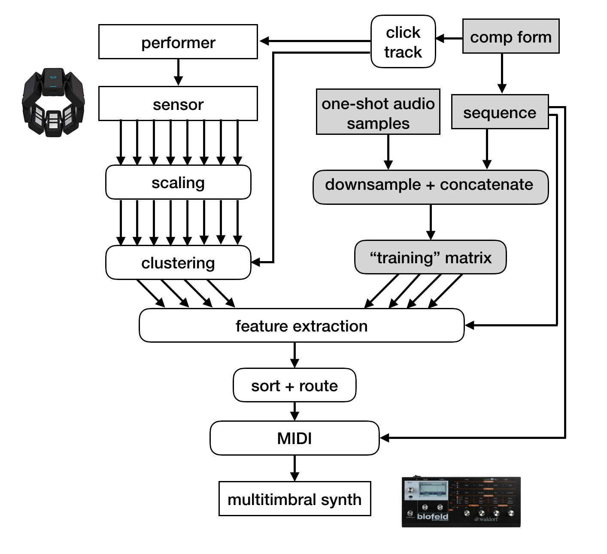
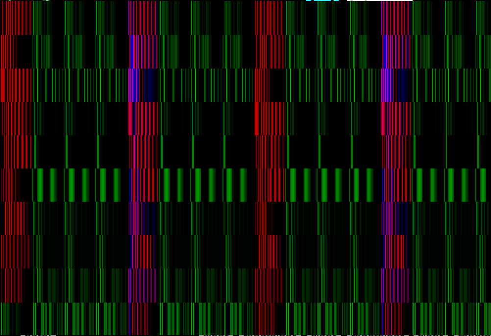

This project represents a first step toward the automated generation of mapping schemes between human interaction with extramusical objects and electronic music. In the approach described below, mappings are determined by comparing sensor input to a synthesized matrix of sequenced audio and determining the most perceptible mapping for each component of the control space. The ultimate goal of Extramentality is to facilitate live performances and installations that feature quotidian objects in the place of traditional musical instruments and to encourage the perception of those objects as sound controlling interfaces.
In this approach, repeated object-manipulating hand motions generate the data that determines output. The input scope is limited to object-manipulating hand gestures, and the scope of musical output is limited to a style of experimental electronic dance music characterized by repetitive sequences and sparse instrumentation, making it a good candidate for testing the reproducibility and accessibility of the resulting mappings.
By constraining the scope of gestural input to repetitive interaction with physical artifacts, the movement of the performer is limited by the shape and size of the artifact as well as the time it takes to complete one cycle of interaction. This made the task of sonifying a gestural event more predictable, and the resulting music more likely to be perceived as being generated by that movement. Although the sensor array measures only the performer’s movements, not the artifact itself, given the project constraints the system can be understood as an augmented extramusical instrument controller.
A sensor array was chosen which would be suitable for the capture of as many object-manipulating gestures as possible. An ideal sensor array would not impede nor be impeded by any fine motor movements involving objects. Early experimentation with the system incorporated a Leap Motion controller which captured movement reliably but required multiple sensors in the case that an object obfuscated any portion of the performers' hands. The Myo armband was found to be a good alternative. Although it is prone to data fluctuations between uses, it has the added benefit of not cutting into the performer’s mental bandwidth [4].
The Myo armband is an off-the-shelf device that measures both bioelectric and inertial data. The armband contains 8 electromyographic (EMG) sensors as well as an inertial measurement unit (IMU) with 9 degrees of freedom [11]. The sensor array has been shown to be useful for the control of prosthetic devices. Although the sampling rate of 200 Hz is less than the medical standard, it meets the suggested rate for control of musical parameters [12]. This project utilized the Myo for MAX external library.
Through a combination of pre-processing, feature extraction, and concepts from machine learning, a working prototype was created. The system requires that the user program a sequence of n instrument patterns, designate global musical variables, load examples of audio samples of instruments matching the chosen instrumentation and run an analysis on a matrix of the sequenced audio. A phrase-length n-dimensional stream of input from the sensor is then analyzed and grouped into n streams, matching the number of voices chosen for the piece. The grouped cluster-streams of sensor input are again analyzed and assigned to the voice type which they are best suited to control.
The “composition form” module requires that the user program a sequence of training data in addition to defining the number of voices, beats per measure, rhythmic subdivision per beat, measures per phrase, and tempo.
Elements of the training set are generated by sequencing downsampled audio of multiple one-shot samples of the instrument. Audio samples were collected from a consumer sample pack of conventionally used drum machine samples. The resulting lists fill a Jitter matrix, one voice per plane, which is used for storage and visualization.

Before comparing a phrase of the input stream to the training data, feature representations of the individual patterns were created. Time-domain features were extracted from each row in each plane of the jitter matrix. The features include mean absolute value, zero-crossing rate, maximum, and first-order difference [6]. Number of peaks is measured by the [ml.peak] object from ml.lib [2], and number of onsets is measured via threshold.
Spectral features were extracted through use of the zsa.descriptors external Max objects. These include Mel-Frequency Cepstral Coefficients from [zsa.mfcc~], which describe the spectral envelope of the audio and are often used for instrument classification, as well as Spectral Centroid from [zsa.centroid~], which provides information about the center of mass of a spectrum and is used as a measure of brightness [7].
Determining the "best candidate" mapping for a specific cluster-stream is accomplished by comparison of the relationship between clusters to the relationship between the planes in the synthesized matrix. It is desirable for the automated scheme to result in the same instrumentation as was intended by the composer when populating the composition sequence. Rather than classifying the clustered streams of sensor input, a hierarchical method was implemented in which feature sets were extracted from the “training” data and used to sort the voice labels in order of the mean of their values. The same extraction and sorting are then performed on the input streams. The resulting ordered lists are paired and sent to a routing module, which forwards the cluster-stream to its assigned voice.
It is assumed that the updated voice assignments are accessible because of the conventional patterns and instrumentation shared by the sub-genres of electronic dance music: 4 on the floor kick drums, off-beat high hats, etc. This accessibility is dependent on the sequencing of the composition form and polyphonic synthesizer timbres following those conventions.
The Max patch is adaptable to different external synths as long as they are multi-timbral. A Waldorf Blofeld has been used for this implementation. The Blofeld is a 16-voice polyphonic synthesizer with internal effects. The timbres on each channel were set to match the voice types defined in the composition form.
For rhythmic voices, the input cluster-stream which was assigned to that voice is run through an onset detection algorithm3 with an adaptive threshold calculated by a moving average over the last 20 samples. The value of the stream at that onset is paired with the note-on MIDI message and controls the velocity of that note. The minimum time between onsets and the resulting note-on messages is determined by the millisecond value of the smallest rhythmic subdivision, which is defined by the user in the composition form.
Melodic voices are controlled by two streams: the first controls note-on messages in the same way as a rhythmic voice and the second is used as an input to key prediction. Tonal scale is defined in the composition form, and the key is predicted by a Hidden Markov Model using [ml.hmm]. Examples of melodic sequences in the user-defined scale are used to build emission and transition matrices, the model is trained, and new values from the cluster stream are analyzed to update the predicted key. This is based on a key-prediction method found in the ml.* external Max package [10]. Currently, melodic output functions for a single voice.
This approach allows the composer to experiment with different gesture vocabularies and combinations thereof during the creative process, rather than devoting time and resources to the assignment of every action-sound relationship in the mapping scheme. Extramusical skills can be for their performative qualities, and the exploration of sonifying those gestures is facilitated. The automated mapping of a quotidian gesture vocabulary has the potential to benefit artistic and compositional practices by expanding the conceptual implications of instrumental performance, visual themes in instrumentality, and enable inclusive musical collaborations.
A successful DMI is defined in the literature as one possessing accessible, reproducible, and expressive gesture-sound relationships [12]. At least some of these relationships should be simple enough to grasp on first use yet complex enough to for the performer to develop skill and individuality [11]. Embodied instrumental practices increase the feeling of control and expression for mapping schema having more than a handful of linear relationships and highlight the unique characteristics of the performer’s movement [1][9]. Furthermore, a system for the control of music should have a certain degree of indeterminacy [3]. These criteria guided the design of the decision-making process for the mapping automation and the modes of control used in the patch.
The automated mappings were found to be reproducible through testing and performance. However, musical output was not found to be reproducible. Furthermore, it is varied enough between objects to be recognizable as being controlled the gesture. This may be improved upon by expanding the control space to include additional musical parameters and levels of mapping.
This prototype sets the foundation for continued research of automated best-candidate mapping strategies and provides a framework for the exploration of object-manipulating gestures in musical performance. The approach generates mappings with little to no effort from the user. However, the interface lacks expressivity, which is partially due to the simplicity of the mappings. Improvement of best-candidate mapping would likely be achieved by the additional layers of input analysis. The author hopes to develop this approach alongside further compositional experiments which serve to inform the work.
This work was completed as part of a master’s thesis in Music Technology at NYU Steinhardt. Thank you, Dr. Morwaread Farbood, Dr. Tae Hong Park, Brian McFee, and Dafna Naphtali for the invaluable advice and support.